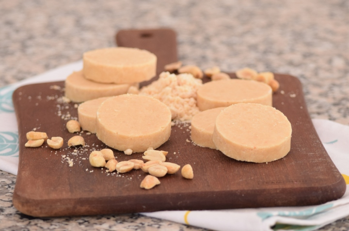

1️⃣Información.
El mazapán es un dulce tradicional hecho a base de almendras y azúcar. La mezcla se moldea en diferentes formas y se puede disfrutar sola o como parte de otros postres. Hay varias versiones del mazapán alrededor del mundo, pero la base común es la combinación de almendras y azúcar.
El mazapán tiene un origen histórico en Europa, con raíces en la cocina española y portuguesa. Se cree que se desarrolló en la región del Mediterráneo y se expandió a través de Europa y las colonias durante la Edad Media. En México, el mazapán ha sido adoptado y adaptado, y es especialmente popular durante las celebraciones y festividades.
En algunos países europeos, el mazapán también se conoce como "marzipan" y puede tener formas y decoraciones más elaboradas, como figuras de frutas o animales.
2️⃣Conoce más.
3️⃣Hazlo tú mismo.
Ingredientes.
- 2 tazas de almendras molidas
- 1 taza de azúcar
- 1 clara de huevo
- 1 cucharadita de esencia de almendra (opcional)
- Azúcar adicional para espolvorear (opcional)
Instrucciones:
- Precalienta el horno a 160°C (325°F) y coloca papel para hornear en una bandeja.
- En un tazón grande, mezcla las almendras molidas con el azúcar hasta que estén bien combinadas.
- Agrega la clara de huevo y la esencia de almendra (si la estás usando) a la mezcla de almendras y azúcar. Mezcla bien hasta que se forme una masa homogénea.
- Forma pequeñas bolitas o figuras con la masa y colócalas en la bandeja preparada. Si lo deseas, espolvorea un poco de azúcar adicional sobre cada bolita.
- Hornea durante 10-12 minutos, o hasta que los mazapanes estén firmes y ligeramente dorados en los bordes.
- Deja enfriar los mazapanes en la bandeja durante unos minutos antes de transferirlos a una rejilla para que se enfríen completamente.